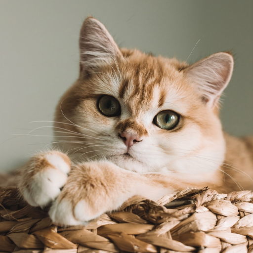
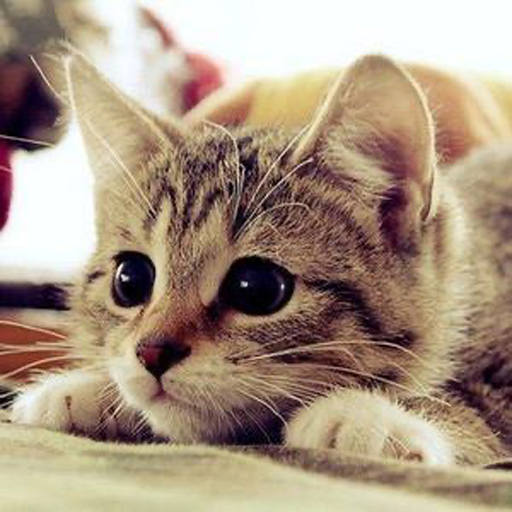
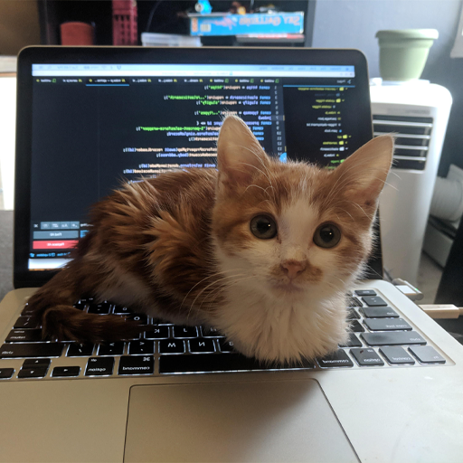

Hoi! Dit is uiteraard geen echte webshop, dit is een website die ik heb gemaakt als huiswerk voor het ROC van Almere.

We doen er als nog gezellig wat kattenfoto's bij want daar kan je nooit genoeg van hebben.
Ik heb deze website gemaakt op 5 mei, in een dag! Ik maak mij dan ook echt zorgen of ik genoeg heb gedaan :')


De source-code voor deze website is beschikbaar op mijn GitHub!